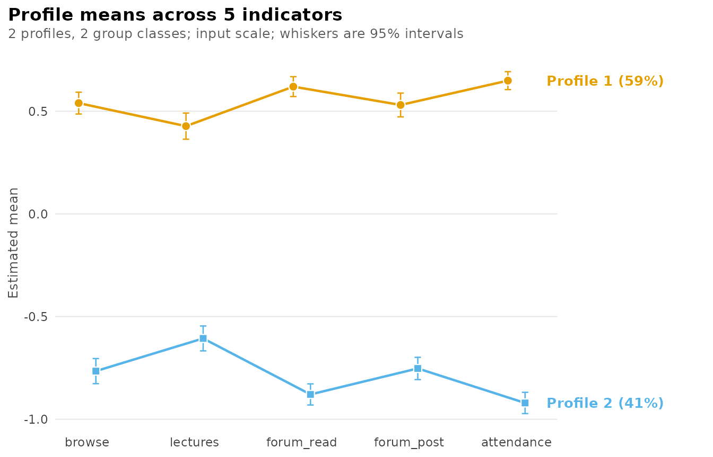
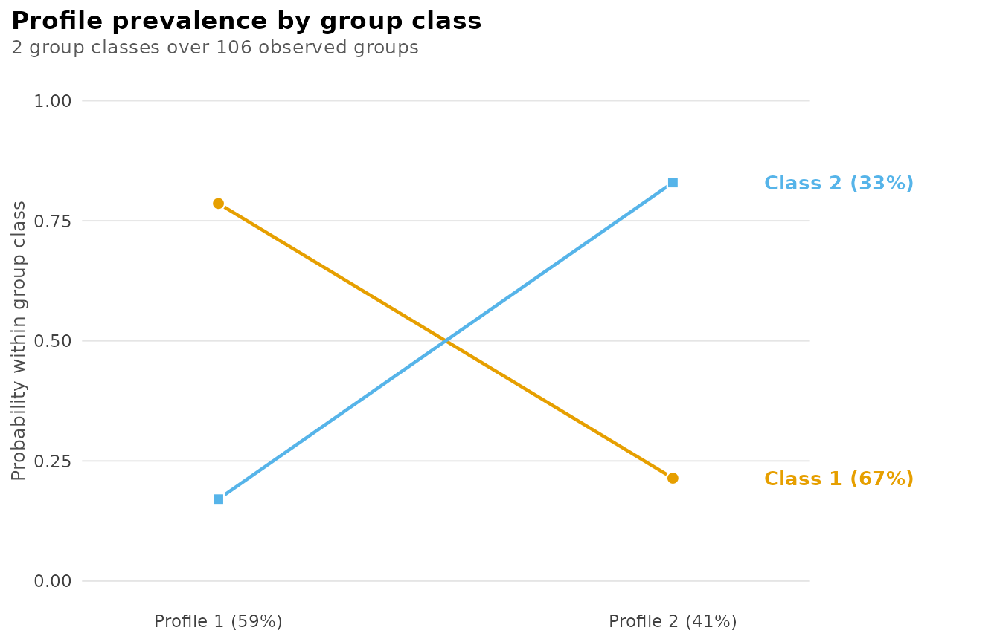

Multilevel latent profile analysis
Written by Mohammed Saqr and Sonsoles López-Pernas
Source:vignettes/lpa.Rmd
lpa.RmdMultilevel latent profile analysis captures heterogeneity in continuous responses by modelling variation within and across groups. Observation-level profiles describe patterns across indicators, while latent group classes capture differences in the prevalence of these profiles across groups.
In this vignette, course enrolments are nested within students. Engagement profiles describe variation in activity patterns across enrolments, while student classes capture differences in how frequently students exhibit those patterns. The profiles share the same indicator means and covariance structure across student classes, allowing their prevalence to be compared on a common basis.
Data
course_engagement has one row per course enrolment:
1,422 enrolments from 106 students. multilpa() requires a
group identifier and indicator variables.
-
Group:
studentidentifies which enrolments belong to the same student. -
Indicators: five activity measures
(
browse,lectures,forum_read,forum_post,attendance), each standardized within course, so 0 is the course average.
The data are simulated, and two further variables record the
structure that generated them: engagement for each
enrolment and student_type for each student.
Clustering within groups
The descriptives() function summarizes the indicators
specified in vars and their clustering within the groups
specified by id. The intraclass correlation
(icc) estimates the proportion of an indicator’s variance
attributable to between-group differences.
descriptives(course_engagement,
vars = c("browse", "lectures", "forum_read", "forum_post",
"attendance"),
id = "student")
#> variable n n_missing mean sd min max n_distinct n_groups icc
#> 1 browse 1422 0 -2.81e-05 0.989 -3.14 2.49 398 106 0.1923
#> 2 lectures 1422 0 -4.22e-05 0.989 -2.91 3.22 399 106 0.0878
#> 3 forum_read 1422 0 7.03e-05 0.989 -2.73 2.81 400 106 0.2240
#> 4 forum_post 1422 0 -2.11e-05 0.989 -2.61 3.10 397 106 0.1503
#> 5 attendance 1422 0 7.74e-05 0.989 -2.45 2.41 401 106 0.2215Fit
The arguments n_profiles and
n_group_classes specify the numbers of observation-level
profiles and group classes. Estimation uses multiple
expectation-maximization (EM) starts, controlled by
n_starts; seed controls reproducibility. The
cores argument permits parallel estimation of starts. The
printed model summary includes the estimated profile means.
fit <- multilpa(course_engagement,
vars = c("browse", "lectures", "forum_read", "forum_post",
"attendance"),
id = "student", n_profiles = 2, n_group_classes = 2,
n_starts = 10, seed = 1)
fit
#> Two-level latent profile analysis: 2 profiles, 2 group classes
#> 1422 individuals in 106 groups; varying diagonal residual covariance (VVI)
#> Log likelihood: -8439.816424 | AIC: 16925.633 | BIC (groups): 16986.892
#> Converged: TRUE | iterations: 9 | best log likelihood reached by 10 of 10 starts (10 converged)
#> Smallest standardized Gaussian eigenvalue: 0.3715 (profiles, profile_2); Gaussian mass: 587.9; weight effective n: 606.
#>
#> Class sizes profile_1 58.7% (834) profile_2 41.3% (588)
#> Group classes group_class_1 32.5% (34) group_class_2 67.5% (72)
#>
#> Means
#> indicator profile_1 profile_2
#> browse 0.540 -0.766
#> lectures 0.427 -0.606
#> forum_read 0.620 -0.879
#> forum_post 0.530 -0.753
#> attendance 0.649 -0.921
#>
#> Variances and standard errors: get_results(x, "profiles").
#> Every other table: get_results(x, what = ), or get_results(x, "all").The starting-value summary reports the log likelihood reached by each start. Replication of the selected likelihood provides evidence of numerical stability, although it does not establish that the global maximum has been found.
get_results(fit, "starts")
#> start log_likelihood converged iterations error boundary
#> 1 1 -8440 TRUE 9 <NA> FALSE
#> 2 2 -8440 TRUE 12 <NA> FALSE
#> 3 3 -8440 TRUE 9 <NA> FALSE
#> 4 4 -8440 TRUE 9 <NA> FALSE
#> 5 5 -8440 TRUE 9 <NA> FALSE
#> 6 6 -8440 TRUE 9 <NA> FALSE
#> 7 7 -8440 TRUE 9 <NA> FALSE
#> 8 8 -8440 TRUE 12 <NA> FALSE
#> 9 9 -8440 TRUE 9 <NA> FALSE
#> 10 10 -8440 TRUE 9 <NA> FALSEProfiles
By default, get_results() returns profile means and
variances, with one row per profile and continuous indicator.
get_results(fit)
#> profile indicator mean variance standard_deviation mean_standard_error
#> 1 1 browse 0.540 0.590 0.768 0.0271
#> 2 1 lectures 0.427 0.845 0.919 0.0325
#> 3 1 forum_read 0.620 0.481 0.694 0.0247
#> 4 1 forum_post 0.530 0.689 0.830 0.0295
#> 5 1 attendance 0.649 0.384 0.620 0.0223
#> 6 2 browse -0.766 0.528 0.727 0.0312
#> 7 2 lectures -0.606 0.538 0.734 0.0309
#> 8 2 forum_read -0.879 0.363 0.603 0.0262
#> 9 2 forum_post -0.753 0.421 0.649 0.0277
#> 10 2 attendance -0.921 0.374 0.611 0.0264
#> variance_standard_error
#> 1 0.0295
#> 2 0.0421
#> 3 0.0244
#> 4 0.0348
#> 5 0.0196
#> 6 0.0322
#> 7 0.0321
#> 8 0.0228
#> 9 0.0261
#> 10 0.0228The profile plot displays the estimated indicator means for each profile. The labels also report the profiles’ estimated shares of observations.
plot_profiles(fit)
Group classes
The "profile_probabilities" table reports the
conditional probability of each observation-level profile within each
group class (probability). The column
group_class_probability reports the estimated proportion of
groups in that class.
get_results(fit, "profile_probabilities")
#> group_class profile probability group_class_probability
#> 1 1 1 0.170 0.325
#> 2 1 2 0.830 0.325
#> 3 2 1 0.786 0.675
#> 4 2 2 0.214 0.675The prevalence plot compares these conditional profile probabilities, with one line per group class.
plot_prevalence(fit)
Class sizes
The "counts" table summarizes class sizes. The column
effective_count sums posterior membership probabilities and
can therefore be noninteger.
get_results(fit, "counts")
#> level class effective_count effective_proportion
#> 1 individuals 1 834.1 0.587
#> 2 individuals 2 587.9 0.413
#> 3 groups 1 34.5 0.325
#> 4 groups 2 71.5 0.675Classification
The "entropy" table summarizes classification
uncertainty at both levels. For a model with more than one class,
relative entropy is 1 when posterior membership is certain and 0 when
every case has equal posterior probability of membership in every class.
It describes separation under the fitted model, not overall model
fit.
get_results(fit, "entropy")
#> level n_classes n_units entropy_sum relative_entropy
#> 1 individuals 2 1422 60.94 0.938
#> 2 groups 2 106 4.43 0.940The "assignments" table appends classification results
to data in its original row order. The columns
profile and group_class contain the most
probable classes. The column uncertainty is one minus the
posterior probability of the assigned profile, and the
posterior_profile_ columns contain membership probabilities
for each profile. The number of posterior columns depends on
n_profiles. Analyses based only on the assigned labels omit
this classification uncertainty.
get_results(fit, "assignments", data = course_engagement) |> head()
#> student course sequence browse lectures forum_read forum_post attendance previous_grade
#> 1 1 23 1 0.73 -0.08 0.30 0.67 0.72 0.54
#> 2 1 19 2 0.68 0.53 -0.02 -0.55 0.70 -0.71
#> 3 1 4 3 -1.51 -0.51 -0.91 -0.80 -0.97 1.98
#> 4 1 18 4 0.64 -1.02 -1.62 -1.20 -1.26 -1.42
#> 5 1 16 5 -0.94 -0.37 -0.71 -0.28 -1.52 -0.67
#> 6 1 29 6 -0.36 -0.46 -0.77 -0.43 -1.34 -0.40
#> engagement student_type profile group_class uncertainty posterior_profile_1 posterior_profile_2
#> 1 engaged wavering 1 1 4.44e-04 1.00e+00 0.000444
#> 2 engaged wavering 1 1 1.49e-02 9.85e-01 0.014854
#> 3 disengaged wavering 2 1 2.42e-06 2.42e-06 0.999998
#> 4 disengaged wavering 2 1 3.86e-06 3.86e-06 0.999996
#> 5 disengaged wavering 2 1 5.75e-06 5.75e-06 0.999994
#> 6 disengaged wavering 2 1 2.28e-05 2.28e-05 0.999977Recovery of the known structure
For these simulated data, the truth argument permits
comparison with the generating labels: engagement for
profiles and student_type for group classes. Class numbers
are arbitrary, so correspondence is assessed from the cross-tabulation
rather than by matching numeric labels directly.
get_results(fit, "assignments", data = course_engagement,
truth = c("engagement", "student_type"))
#> assignment class truth value n proportion
#> 1 profile 1 engagement disengaged 16 0.0274
#> 2 profile 2 engagement disengaged 569 0.9726
#> 3 profile 1 engagement engaged 820 0.9797
#> 4 profile 2 engagement engaged 17 0.0203
#> 5 group_class 1 student_type committed 1 0.0161
#> 6 group_class 2 student_type committed 61 0.9839
#> 7 group_class 1 student_type wavering 34 0.7727
#> 8 group_class 2 student_type wavering 10 0.2273Reference
The calls below list the other tables, functions and views available for a fitted model. Each comment states what the call returns.
# Tables: get_results(fit, what)
get_results(fit, "all") # every table, as a named list
get_results(fit, "covariances") # within-profile residual covariances
get_results(fit, "posteriors") # one row per observation and profile
get_results(fit, "posteriors", format = "wide") # one row per observation
get_results(fit, "group_posteriors") # one row per group and group class
get_results(fit, "classification") # class sizes and average posteriors
get_results(fit, "average_posteriors") # mean posterior by assigned class
get_results(fit, "classification_errors") # P(assigned class | true class)
get_results(fit, "bch_weights") # weights for three-step analysis
get_results(fit, "residuals") # residual correlations within profiles
get_results(fit, "information_criteria") # AIC, BIC and the other criteria
get_results(fit, "model") # one row describing the fit
get_results(fit, "data") # the variables used in the fit
as.data.frame(fit) # the profile table
# Summaries and diagnostics
descriptives(fit) # indicator summaries with the ICC
descriptives(fit, by = "profile") # the same, by assigned profile
diagnostics(fit) # every classification diagnostic
report(fit) # summary, diagnostics and plots together
# Inference and likelihood
parameter_inference(fit) # standard errors and Wald intervals
confint(fit) # confidence intervals
vcov(fit) # covariance matrix of the estimates
logLik(fit) # log likelihood
AIC(fit) # Akaike information criterion
BIC(fit) # BIC with the number of groups
nobs(fit) # number of groups
# Plots: the plot_ functions, each with what = and "all"
plot_views() # every view and what it shows
plot_profiles(fit, what = "bars") # profile means with 95% intervals
plot_profiles(fit, what = "heatmap") # means in standard deviations
plot_profiles(fit, what = "all") # every profile view
plot_diagnostics(fit, what = "sizes") # effective size of each profile
plot_diagnostics(fit, what = "entropy") # per-case classification uncertainty
plot_diagnostics(fit, what = "posteriors") # posterior of each assigned profile
plot_diagnostics(fit, what = "avepp") # average posteriors, assigned by posterior class
plot(fit, what = "all") # every view this fit supports
# Other functions
sensitivity(fit, seeds = 1:10) # refits under several seedsThe class
enumeration article covers enumerate_classes() and
get_candidate(); the latent
transition analysis article covers lta(),
get_tna() and get_group_tna(). The evaluation
article on the package website
covers bootstrap_lrt(), and the covariates article covers
three_step(), r3step() and
fit_staged().
Sampling weights
Sampling weights can represent unequal selection probabilities. The
example below assigns twice the weight to the simulated
"wavering" student class, as would be appropriate if its
sampling probability were half that of the other class. The weight
column is supplied through weights and must be constant
within the independent sampling unit, here student.
Estimation maximizes a weighted pseudo-log-likelihood after normalizing
weights to sum to the number of students. The output also reports Kish’s
effective sample size.
weighted_data <- transform(course_engagement,
survey_weight = ifelse(student_type == "wavering", 2, 1))
weighted_fit <- multilpa(weighted_data,
vars = c("browse", "lectures", "forum_read",
"forum_post", "attendance"),
id = "student", n_profiles = 2, n_group_classes = 2,
weights = "survey_weight", n_starts = 10, seed = 1)
weighted_fit
#> Two-level latent profile analysis: 2 profiles, 2 group classes
#> 1422 individuals in 106 groups; varying diagonal residual covariance (VVI)
#> Sampling weights `survey_weight` (pseudo maximum likelihood): Kish effective n 94.5 of 106 units
#> Log likelihood: -8341.125778 | AIC: 16728.252 | BIC (groups): 16789.511
#> Converged: TRUE | iterations: 9 | best log likelihood reached by 10 of 10 starts (10 converged)
#> Smallest standardized Gaussian eigenvalue: 0.3759 (profiles, profile_2); Gaussian mass: 714.8; weight effective n: 563.8.
#>
#> Class sizes profile_1 49.5% (701) profile_2 50.5% (715)
#> Group classes group_class_1 45.2% (48) group_class_2 54.8% (58)
#>
#> Means
#> indicator profile_1 profile_2
#> browse 0.525 -0.770
#> lectures 0.446 -0.608
#> forum_read 0.605 -0.877
#> forum_post 0.515 -0.742
#> attendance 0.655 -0.921
#>
#> Variances and standard errors: get_results(x, "profiles").
#> Every other table: get_results(x, what = ), or get_results(x, "all").For weighted fits, parameter_inference() uses sandwich
standard errors by default. The package does not support
vcov_type = "observed" for these fits because
inverse-information standard errors do not generally represent the
sampling variance under unequal weighting.
head(parameter_inference(weighted_fit), 4)
#> level outcome term parameter estimate standard_error statistic p_value p_adjusted
#> 1 measurement profile_1 browse mean 0.525 0.0324 16.2 6.16e-59 6.16e-59
#> 2 measurement profile_1 lectures mean 0.446 0.0367 12.2 4.54e-34 4.54e-34
#> 3 measurement profile_1 forum_read mean 0.605 0.0264 22.9 8.01e-116 8.01e-116
#> 4 measurement profile_1 forum_post mean 0.515 0.0319 16.2 9.48e-59 9.48e-59
#> conf_low conf_high
#> 1 0.462 0.589
#> 2 0.374 0.518
#> 3 0.553 0.657
#> 4 0.453 0.578The weights argument is also available in
lta(), mixture_regression() and the model
families fitted through multilpa(). The parametric
bootstrap likelihood ratio test does not support weighted fits; its
simulations do not reproduce a sampling design.
All tables
The model summary collects the result tables. The rows
argument limits the number of rows printed from each table.
print(summary(fit), rows = 3)
#> Two-level latent profile analysis: 2 profiles, 2 group classes
#> Individuals: 1422; groups: 106; parameters: 23; converged: TRUE
#> Log likelihood: -8439.816424; AIC: 16925.633
#> BIC (groups): 16986.892; BIC (individuals): 17046.609
#> Best likelihood replicated in 10/10 starts (absolute tolerance 0.00711).
#>
#> -- profiles --------------------------------------------------------
#> profile indicator mean variance standard_deviation mean_standard_error variance_standard_error
#> 1 browse 0.5396 0.5899 0.7680 0.02710 0.02948
#> 1 lectures 0.4274 0.8447 0.9191 0.03249 0.04210
#> 1 forum_read 0.6198 0.4815 0.6939 0.02473 0.02440
#> ... 7 more rows. get_results(x, what = "profiles")
#>
#> -- responses -------------------------------------------------------
#> (no rows)
#>
#> -- covariances -----------------------------------------------------
#> profile indicator indicator_2 covariance
#> 1 browse browse 0.5899
#> 1 lectures browse 0.0000
#> 1 forum_read browse 0.0000
#> ... 47 more rows. get_results(x, what = "covariances")
#>
#> -- gaussian_diagnostics --------------------------------------------
#> context profile gaussian_mass positive_rows weight_effective_n min_variance_ratio
#> profiles profile_1 834.1 1422 852 0.3930
#> profiles profile_2 587.9 1422 606 0.3715
#> min_standardized_eigenvalue boundary
#> 0.3930 FALSE
#> 0.3715 FALSE
#>
#> -- profile_probabilities -------------------------------------------
#> group_class profile probability group_class_probability
#> 1 1 0.1705 0.3253
#> 1 2 0.8295 0.3253
#> 2 1 0.7859 0.6747
#> ... 1 more rows. get_results(x, what = "profile_probabilities")
#>
#> -- counts ----------------------------------------------------------
#> level class effective_count effective_proportion
#> individuals 1 834.10 0.5866
#> individuals 2 587.90 0.4134
#> groups 1 34.48 0.3253
#> ... 1 more rows. get_results(x, what = "counts")
#>
#> -- posteriors ------------------------------------------------------
#> row group profile posterior modal
#> 1 1 1 9.996e-01 TRUE
#> 2 1 1 9.851e-01 TRUE
#> 3 1 1 2.421e-06 FALSE
#> ... 2841 more rows. get_results(x, what = "posteriors")
#>
#> -- group_posteriors ------------------------------------------------
#> group group_size log_likelihood group_class posterior modal
#> 1 13 -61.52 1 1.000e+00 TRUE
#> 2 13 -71.94 1 1.000e+00 TRUE
#> 3 14 -76.69 1 6.005e-10 FALSE
#> ... 209 more rows. get_results(x, what = "group_posteriors")
#>
#> -- assignments -----------------------------------------------------
#> student browse lectures forum_read forum_post attendance profile group_class uncertainty
#> 1 0.73 -0.08 0.30 0.67 0.72 1 1 4.436e-04
#> 1 0.68 0.53 -0.02 -0.55 0.70 1 1 1.485e-02
#> 1 -1.51 -0.51 -0.91 -0.80 -0.97 2 1 2.421e-06
#> posterior_profile_1 posterior_profile_2
#> 9.996e-01 0.0004436
#> 9.851e-01 0.0148535
#> 2.421e-06 0.9999976
#> ... 1419 more rows. get_results(x, what = "assignments")
#>
#> -- classification --------------------------------------------------
#> level class n_modal proportion_modal estimated_n estimated_proportion average_posterior
#> individuals 1 836 0.5879 834.10 0.5866 0.9849
#> individuals 2 586 0.4121 587.90 0.4134 0.9818
#> groups 1 35 0.3302 34.48 0.3253 0.9690
#> odds_correct_classification
#> 46.08
#> 76.35
#> 64.80
#> ... 1 more rows. get_results(x, what = "classification")
#>
#> -- average_posteriors ----------------------------------------------
#> level assigned_class class n_assigned average_posterior
#> individuals 1 1 836 0.98493
#> individuals 1 2 836 0.01507
#> individuals 2 1 586 0.01824
#> ... 5 more rows. get_results(x, what = "average_posteriors")
#>
#> -- classification_errors -------------------------------------------
#> level true_class assigned_class probability
#> individuals 1 1 0.98718
#> individuals 1 2 0.01282
#> individuals 2 1 0.02142
#> ... 5 more rows. get_results(x, what = "classification_errors")
#>
#> -- bch_weights -----------------------------------------------------
#> level unit assigned_class class weight
#> individuals 1 1 1 1.01327
#> individuals 1 1 2 -0.01327
#> individuals 2 1 1 1.01327
#> ... 3053 more rows. get_results(x, what = "bch_weights")
#>
#> -- entropy ---------------------------------------------------------
#> level n_classes n_units entropy_sum relative_entropy
#> individuals 2 1422 60.940 0.9382
#> groups 2 106 4.435 0.9396
#>
#> -- replication -----------------------------------------------------
#> n_starts n_screened n_converged n_failed n_best_replicated share tolerance best_start
#> 10 0 10 0 10 1 0.00711 1
#> log_likelihood
#> -8440
#>
#> -- residuals -------------------------------------------------------
#> profile indicator_1 indicator_2 kind observed expected residual effective_n statistic df
#> profile_1 lectures attendance gaussian 0.2339 0 0.2339 834.1 6.871 NA
#> profile_2 forum_read attendance gaussian 0.2287 0 0.2287 587.9 5.630 NA
#> profile_1 forum_read attendance gaussian 0.2088 0 0.2088 834.1 6.109 NA
#> p_value p_adjusted
#> 6.374e-12 6.374e-12
#> 1.799e-08 1.799e-08
#> 1.001e-09 1.001e-09
#> ... 17 more rows. get_results(x, what = "residuals")
#>
#> -- information_criteria --------------------------------------------
#> log_likelihood n_parameters aic kic bic_groups bic_individual sabic_groups sabic_individual
#> -8440 23 16926 16952 16987 17047 16914 16974
#> caic_groups caic_individual awe_groups awe_individual icl_groups icl_individual clc_groups
#> 17010 17070 17292 17412 17116 17176 17009
#> clc_individual
#> 17009
#>
#> -- model -----------------------------------------------------------
#> n_observations n_informative n_groups n_profiles n_group_classes centering scaling
#> 1422 1422 106 2 2 none none
#> covariance_structure n_parameters n_parameters_with_measurement log_likelihood aic bic_groups
#> VVI 23 23 -8440 16926 16987
#> bic_individual converged iterations boundary small_classes best_start n_best_replicated weights
#> 17047 TRUE 9 FALSE FALSE 1 10 <NA>
#>
#> -- stages ----------------------------------------------------------
#> stage group_classes fixed log_likelihood parameters parameters_with_measurement converged
#> joint 2 <NA> -8440 23 23 TRUE
#>
#> -- starts ----------------------------------------------------------
#> start log_likelihood converged iterations error boundary
#> 1 -8440 TRUE 9 <NA> FALSE
#> 2 -8440 TRUE 12 <NA> FALSE
#> 3 -8440 TRUE 9 <NA> FALSE
#> ... 7 more rows. get_results(x, what = "starts")
#>
#> -- data ------------------------------------------------------------
#> student browse lectures forum_read forum_post attendance
#> 1 0.73 -0.08 0.30 0.67 0.72
#> 1 0.68 0.53 -0.02 -0.55 0.70
#> 1 -1.51 -0.51 -0.91 -0.80 -0.97
#> ... 1419 more rows. get_results(x, what = "data")
#>
#> 21 tables above, truncated to fit. get_results(x, what = ) returns any
#> of them whole, and get_results(x, what = "all") returns every one.Assumptions
- Profiles have the same means and variances in every group class.
- Observations are independent given their group’s class, and groups are independent of one another.
- Indicators are independent within a profile (the default diagonal
covariance;
covariance_model = "full"relaxes it). - The numbers of profiles and group classes are chosen by the analyst; see the class enumeration article for comparing them.